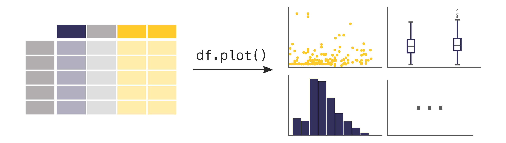

Basic Visualisations in Pandas#

Learning Objectives
Questions:
How to get started with plotting using Pandas.
Objectives:
Understand the basics of the
.plot()syntax.Visualise your data with various plots.
A note on plotting
Plotting with Pandas is often done using the matplotlib library, which provides extensive tools for creating a wide variety of visualisations. However, Pandas also offers a simpler interface for basic plotting through the .plot() method. This guide will focus on using the .plot() method to create quick and easy visualisations directly from a DataFrame or Series, without diving into the more complex features of matplotlib.
If you want to dive further into the world of plotting, you can read more about matplotlib here.
Basic usage#
The .plot() method in Pandas is a simple and convenient way to create visualisations from your data. You can call this method directly on a Series or DataFrame object, and it will generate a plot based on the data it contains.
One of the key features of the .plot() method is its flexibility in creating different types of plots. By using the kind parameter, you can specify the type of plot you want to generate, such as a line plot, bar plot, histogram, or scatter plot, among others. Additionally, the .plot() method provides several other parameters that allow you to customise the appearance of the plot, such as setting labels for the axes, choosing specific columns to plot, and adjusting the layout.
The .plot() syntax#
The general syntax for using the .plot() method is as follows:
DataFrame.plot(kind='plot_type', x='x_column', y='y_column', title='Plot Title', **kwargs)
Key parameters#
kind: Specifies the type of plot to generate. The available options include:
'line': Line plot (default)'bar': Vertical bar plot'barh': Horizontal bar plot'hist': Histogram'box': Boxplot'kde'/'density': Kernel Density Estimation plot'area': Area plot'pie': Pie plot'scatter': Scatter plot (DataFrame only)'hexbin': Hexbin plot (DataFrame only)
x: (Optional) Specifies the column to use for the x-axis
y: (Optional) Specifies the column to use for the y-axis
title: (Optional) Specifies the title of the plot
kwargs: (Optional) Represents additional keyword arguments for customisation, such as labels, titles, and colors
We will not cover additional keyword arguments here, as this is just a quick introduction. However, you can find more information on the the .plot() method in the official Pandas documentation.
Examples#
# This line imports the pandas library and aliases it as 'pd'.
import pandas as pd
# Load the Titanic dataset from a CSV file into a DataFrame named 'titanic'.
titanic = pd.read_csv('data/titanic.csv')
Pie chart#
This pie chart visualises the distribution of passengers by sex (Sex).
It shows the proportion of male and female passengers in the dataset.
# Basic pie chart of passenger distribution by sex
titanic['Sex'].value_counts().plot(kind='pie', title='Passenger Distribution by Sex')
Scatter plot#
This scatter plot illustrates the relationship between passengers’ age and fare.
Each dot represents a passenger, with their age on the x-axis and the fare they paid on the y-axis.
# Scatter plot (requires x and y columns)
titanic.plot(kind='scatter', x='Age', y='Fare', title='Age vs Fare')
Bar plot#
This bar plot shows the distribution of passengers across the different classes (Pclass), sorted by class.
The height of each bar indicates the number of passengers in each class.
# Bar plot sorted by class
titanic['Pclass'].value_counts().sort_index().plot(kind='bar', title='Passenger Class Distribution (Sorted)')
Customising plots#
The .plot() method is highly customisable, giving you the flexibility to adjust various aspects of your visualisations, such as the plot type, axis labels, titles, colours, and overall figure aesthetics. Whether you need a simple line chart, a detailed scatter plot, or a complex histogram, you can create a wide range of plots with just a few lines of code.
Key points#
Pandas’
.plot()method is a tool for quickly generating a wide range of plots directly from your data.It supports various types of plots, including line plots, bar charts, scatter plots, and histograms.
The
.plot()method allows for both quick exploratory analysis and more polished, presentation-ready graphics.For more elaborate and detailed plotting, consider using the
matplotliblibrary directly.